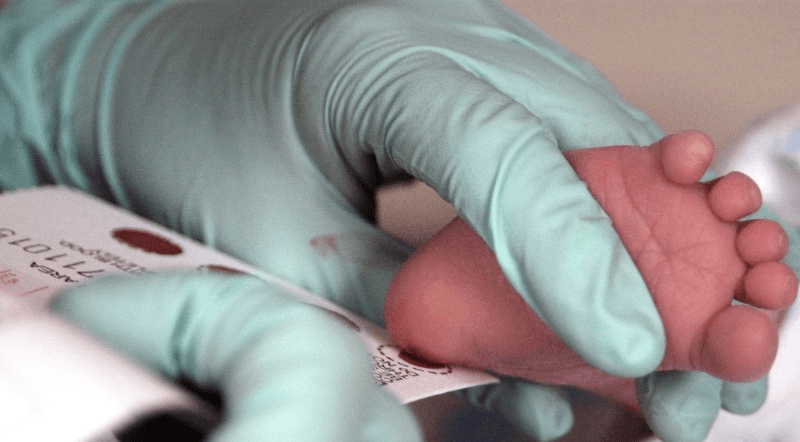

Surrogacy has woven itself into the fabric of modern family building, offering hope to many who dream of having a child. Historically, surrogacy emerged as a revolutionary solution for infertility and has since evolved with medical advancements, becoming more accessible and successful. Today, understanding the success rate of surrogate mothers is crucial for anyone considering this path to parenthood. It's not just about finding a surrogate; it's about grasping the journey's complexities, from emotional readiness to legal considerations. This blog dives into what you need to know about the success rates, shedding light on how technology and experience have shaped outcomes in surrogacy today.
Surrogacy has become a beacon of hope for many families. The success rate of surrogacy varies widely, influenced by several factors. These include the surrogate's health, the quality of the embryo, and the technology used.
Most surrogacy agencies report a high success rate, often above 75%. This statistic is encouraging for prospective parents. It reflects advancements in fertility treatments and surrogacy practices. However, it's important to note that each case is unique. Success can depend heavily on individual circumstances.
The journey through surrogacy is filled with emotional highs and lows. For intended parents, the process can be both exhilarating and stressful. They place their hopes and dreams in the hands of another person.
Surrogates often form a deep emotional connection to their role in this journey. They experience pride in helping create families but may also feel a complex mix of emotions upon parting with the baby. Support groups and counseling are vital resources for all parties involved.
Navigating the legal landscape of surrogacy is crucial. Laws vary significantly from one jurisdiction to another. Some regions offer strong protections for intended parents and surrogates, while others have restrictive or unclear laws.
Intended parents must work with legal professionals specializing in reproductive law. This ensures that parental rights are established without ambiguity. Surrogates also need legal representation to safeguard their interests throughout the process.
The financial aspect of surrogacy cannot be overlooked. Expenses can range widely, often exceeding $100,000 in some cases. These costs cover medical procedures, legal fees, surrogate compensation, and agency fees.
Prospective parents should prepare financially for this commitment. Many explore fundraising or financing options to support their surrogacy journey.
Ivf Fertilization ProcessAs you consider the intricate steps of the IVF fertilization process, envision the precision involved in selecting the best sperm and eggs for successful fertilization in a controlled laboratory setting. The journey from initial fertilization to the development of viable embryos is a fascinating one, with each stage carefully monitored for quality and potential. Understanding this process sheds light on the complexities of fertility treatments and the delicate balance required for achieving positive outcomes.
During the IVF fertilization process, the important step of egg retrieval and sperm collection is conducted to gather the necessary reproductive materials for the procedure. Ovulation induction is initiated to stimulate the ovaries to produce multiple eggs, increasing the chances of successful fertilization. Sperm analysis is vital to assess the quality and quantity of sperm available for fertilization. This analysis helps determine the best course of action to optimize the chances of successful fertilization.
Throughout the process, monitoring follicle growth is essential. Follicles are fluid-filled sacs within the ovaries that contain developing eggs. The growth and development of these follicles are closely monitored through ultrasound scans and hormone level assessments. This monitoring ensures that the eggs are retrieved at the best time for fertilization.
Egg quality is a critical factor in the IVF process. The quality of the eggs retrieved directly impacts the chances of successful fertilization and embryo development. Specialized techniques are used to assess the maturity and quality of the eggs before fertilization occurs.
Simultaneously, semen preparation is carried out to make sure that the sperm is in the best possible condition for fertilization. The sperm sample is processed to separate healthy, motile sperm from seminal fluid and debris, enhancing the chances of successful fertilization when combined with the retrieved eggs.
In the laboratory setting, the process of fertilization involves the careful and controlled introduction of sperm to the retrieved eggs for potential embryo development. Sperm selection is a vital step where the healthiest and most motile sperm are chosen to increase the chances of successful fertilization. On the other hand, egg preparation ensures that the eggs are in excellent condition for fertilization, often involving removing surrounding cells to allow better access for sperm.
Fertilization techniques such as intracytoplasmic sperm injection (ICSI) may be used if there are concerns about the sperm's ability to fertilize the egg naturally. Genetic testing can also be performed at this stage to screen for any genetic abnormalities before fertilization. The culture conditions in the laboratory play a critical role in supporting embryo development, providing the necessary nutrients and environment for optimal growth. Embryo quality is closely monitored to select the most viable embryos for transfer.
Fertilization rates are calculated by checking the number of successfully fertilized eggs, indicating the efficiency of the process. Regular fertilization checks are conducted to assess the progress and adjust techniques if needed. Timing is crucial in fertilization to ensure that the sperm and egg are at their peak fertility, increasing the chances of fertilization success. By meticulously managing these aspects, the laboratory can optimize the fertilization process and improve the chances of successful embryo development.
Embryo development and monitoring require precise observation of growth and quality indicators to guarantee ideal conditions for successful transfer. After fertilization, the zygote undergoes multiple rounds of cell division, progressing from a single cell to a multicellular embryo. This pivotal phase involves meticulous monitoring to assess the rate and pattern of cell division, ensuring proper development. Genetic testing may be conducted at this stage to screen for chromosomal abnormalities or genetic disorders, enhancing the selection of healthy embryos for implantation.
As the embryo matures, it undergoes blastocyst formation, where it develops a fluid-filled cavity and two distinct cell types. This stage marks a significant milestone in embryonic development, indicating the readiness of the embryo for potential implantation. Monitoring the growth and expansion of the blastocyst is crucial to assess its quality and viability for transfer. Additionally, the implantation process is a critical step where the blastocyst attaches to the uterine wall, establishing a pregnancy.
Continuous growth monitoring is essential throughout the development process to track the embryo's progression and ensure it meets the necessary criteria for transfer. By closely observing key indicators like cell division, genetic makeup, blastocyst formation, and implantation potential, healthcare providers can optimize the chances of a successful IVF procedure.
Monitoring the progress of the embryo transfer process involves evaluating key parameters to optimize successful implantation and pregnancy establishment. The transfer procedure is a critical step in IVF treatment, where embryos are delicately placed into the uterus to enhance implantation success. This step is meticulously carried out to guarantee the best possible outcomes for the patient.
The uterine environment plays an essential role in determining the success of embryo implantation. Factors such as the thickness of the endometrial lining and the receptivity of the uterus are important in facilitating successful implantation. By carefully evaluating the uterine environment before the transfer, healthcare providers can improve the chances of implantation success.
Embryo quality is another crucial aspect to consider during the transfer process. High-quality embryos have a higher likelihood of implanting successfully, leading to increased pregnancy chances. Healthcare providers closely examine the embryos to select the most viable ones for transfer, maximizing the chances of a successful pregnancy.
Throughout the transfer process, healthcare providers focus on optimizing the conditions for successful implantation and pregnancy establishment. By paying close attention to the transfer procedure, uterine environment, embryo quality, and overall pregnancy chances, healthcare teams aim to enhance the likelihood of a positive outcome for individuals undergoing IVF treatment.
To optimize the likelihood of a successful pregnancy following the embryo transfer process, careful attention must be given to the conditions supporting implantation and early development. Hormone therapy plays an essential role in preparing the uterine lining for implantation. By carefully timing the administration of hormones such as progesterone, which supports the early stages of pregnancy, the chances of successful implantation can be greatly increased.
Genetic testing of embryos before transfer can also enhance the success of pregnancy. This testing, known as preimplantation genetic testing (PGT), helps identify chromosomal abnormalities or genetic conditions in embryos, allowing for the selection of the healthiest embryos with the highest potential for successful implantation and development.
Additionally, the use of frozen embryos can positively impact implantation success. Frozen embryo transfers have been shown to have comparable success rates to fresh embryo transfers, offering the flexibility to optimize the timing of the transfer based on the recipient's hormonal cycle.
In cases where carrying a pregnancy is not possible, gestational surrogacy can be a viable option. This involves the transfer of embryos created through IVF into the uterus of a surrogate who carries the pregnancy to term. Gestational surrogacy allows individuals or couples struggling with infertility to achieve their dream of parenthood by utilizing the assistance of a surrogate to carry the pregnancy to term.
The age of both the surrogate and the egg donor plays a crucial role in determining the success rate of surrogacy. Younger women typically have higher fertility rates, which can lead to better outcomes.
Surrogates under the age of 35 tend to have higher success rates. This is because their bodies are more likely to support a healthy pregnancy. Similarly, egg donors' age affects the quality of eggs. Eggs from donors in their 20s and early 30s are generally more viable.
The overall health and lifestyle of the surrogate mother are also significant factors. A healthy surrogate with no chronic illnesses is more likely to carry a pregnancy to term successfully.
It's essential for surrogates to maintain a balanced diet, regular exercise, and avoid harmful substances. These practices contribute greatly to a successful surrogacy journey. Medical screenings help ensure that potential surrogates are fit for pregnancy.
A surrogate's previous pregnancies can offer insights into her ability to carry another successful pregnancy. Women who have had successful pregnancies and births before are often considered ideal candidates.
This history indicates her body's capability to handle pregnancy well. It reassures intended parents about her suitability as a surrogate.
The quality of the embryo implanted into the surrogate's womb is pivotal. High-quality embryos, usually resulting from healthy eggs and sperm, increase the chances of implantation and successful pregnancy.
Advanced reproductive technologies play a significant role here. Techniques like IVF (In Vitro Fertilization) enhance embryo quality before transfer, boosting success rates significantly.
Emotional and psychological support cannot be overstated in its importance for a surrogate during the pregnancy journey. Surrogates who receive continuous support from professionals, agencies, and intended parents tend to experience less stress.
Stress reduction is key for a healthy pregnancy. Counseling sessions and support groups provide valuable outlets for surrogates to share experiences and receive encouragement.
Understanding surrogate mother success rates involves looking at several metrics. These include pregnancy rates, live birth rates, and the health of both the baby and the surrogate mother post-delivery.
Surrogacy agencies report that the average pregnancy success rate for surrogates is between 60% to 75% on the first try. This rate increases with multiple attempts. For live births, the rate can be as high as 95%. These figures are encouraging for intended parents but vary based on factors discussed previously.
The age of both the egg donor and the surrogate plays a critical role in success rates. Women under 35 have higher success rates due to better egg quality and uterine environment.
Studies show that surrogate mothers aged between 21 and 37 offer the highest chances of a successful pregnancy. The decline in fertility related to age means older surrogates may face lower success rates.
Advancements in medical technology significantly boost surrogacy success rates. Techniques like In Vitro Fertilization (IVF) and Preimplantation Genetic Diagnosis (PGD) help ensure healthier embryos and pregnancies.
These technologies allow doctors to select the best embryos for transfer, increasing the likelihood of implantation and reducing miscarriage risks. As a result, surrogacy has become more reliable over time.
The emotional health of a surrogate mother impacts her ability to carry a pregnancy successfully. Agencies provide comprehensive support systems to ensure surrogates feel supported throughout their journey.
This includes counseling and community support groups where surrogates can share experiences and advice. A positive mental state helps maintain a healthy pregnancy environment, contributing to higher success rates.
Countries with clear legal frameworks for surrogacy tend to report higher success rates. Legal clarity provides security for all parties involved, ensuring that agreements are honored and medical procedures are conducted without delay.
Regions where surrogacy laws are well-established also often have better healthcare systems supporting reproductive technologies. This further enhances overall success chances.
The success rates between traditional and gestational surrogacy differ significantly. Gestational surrogacy, where the surrogate mother has no genetic link to the baby, often shows higher success rates. This is largely due to the advancements in IVF (In Vitro Fertilization) technology.
In contrast, traditional surrogacy involves the surrogate's egg being fertilized, creating a genetic link between her and the child. This method's success rates are slightly lower due to the complexities of natural or intrauterine insemination.
Gestational surrogacy carries fewer medical risks compared to traditional surrogacy. The absence of a genetic connection in gestational surrogacy reduces the potential for legal and emotional complications post-birth.
Traditional surrogacy poses more medical risks, including complications from insemination and higher chances of emotional distress for the surrogate, given her biological connection to the child.
Legal implications vary greatly between these two types of surrogacy. Gestational surrogacy tends to have clearer legal boundaries because both intended parents can be genetically related to the child. This simplifies parental rights issues in many jurisdictions.
Traditional surrogacy faces more complex legal challenges due to the surrogate's biological link to the child. Many states have specific laws that complicate or outright ban traditional surrogacy arrangements.
The emotional impact on all parties involved cannot be understated. Gestational surrogates may feel less emotionally attached, as they have no genetic ties to the babies they carry. This can make it easier for them when it comes time to hand over the baby to its intended parents.
On the other hand, traditional surrogates might experience stronger emotional bonds with the baby, given their biological connection. This can lead to complicated feelings during and after pregnancy.
Costs can vary widely between traditional and gestational surrogacy. Generally, gestational surrogacy is more expensive due to the need for IVF treatments, which are not always required in traditional surrogacy scenarios. However, potential surrogate fees should also be considered, especially in traditional arrangements where complications may arise from establishing parental rights.
The age of a surrogate mother plays a crucial role in the success rates of surrogacy. Younger surrogates, typically between 21 and 35 years, often have higher success rates. This is because they generally face fewer health risks during pregnancy.
Women in this age group are more likely to have healthier pregnancies. Their bodies are better equipped to handle the demands of carrying a child. As a result, complications are less common, leading to higher chances of successful births.
The age of the intended parents, especially the egg provider, also impacts surrogacy success rates. Older women may face challenges with egg quality, which can affect embryo development.
Using eggs from younger donors or the intended mother—if she is under 35—can significantly increase success rates. This approach helps overcome potential hurdles related to poor egg quality.
Health status is as important as age in determining surrogacy success. A comprehensive medical screening process ensures that both surrogate and intended parents meet health criteria.
Surrogates undergo thorough health evaluations. These checks help identify any issues that could jeopardize pregnancy success. Similarly, intended parents' health can influence outcomes, particularly regarding genetic material used for conception.
Mental and emotional readiness plays a pivotal role in surrogacy success. Surrogates must be mentally prepared for the journey ahead.
Support systems and counseling services are vital for both surrogates and intended parents. They help manage expectations and navigate emotional highs and lows throughout the process.
Medical screenings play a crucial role in the success rate of surrogate motherhood. These checks ensure that the surrogate is physically and mentally prepared for pregnancy. They involve comprehensive health evaluations.
Doctors conduct blood tests, fertility assessments, and psychological screenings. These steps are vital to confirm the surrogate’s ability to carry a pregnancy safely. A clean bill of health increases the chance of a successful surrogacy journey.
Another key aspect is genetic testing. This process evaluates any genetic conditions that could affect the baby's health. It involves analyzing DNA samples from both parents and sometimes the surrogate.
This step helps in preventing hereditary diseases from passing on to the child. It reassures all parties involved about the baby's well-being. Thus, it significantly contributes to the overall success rates.

Lifestyle factors also undergo scrutiny during medical screening. Surrogates must lead healthy lifestyles to qualify. This includes a balanced diet, regular exercise, and avoiding harmful substances like tobacco and alcohol.
Such habits ensure the surrogate's body is in optimal condition for pregnancy. They also minimize risks associated with gestational complications. A healthy lifestyle directly correlates with higher success rates in surrogacy.
Countries around the world have diverse laws governing surrogacy. Some places fully allow it, while others impose strict bans. This legal mosaic affects the success rate of surrogate motherhood significantly.
In jurisdictions where surrogacy is well-regulated, contracts protect all parties involved. They clearly outline each person's rights and responsibilities. This clarity helps prevent disputes that could jeopardize the process. It also ensures that the surrogate mother receives proper care and compensation.
However, in areas lacking clear regulations, surrogate mothers may face challenges. Without legal protection, they risk exploitation or loss of rights over the child once born. Such uncertainties can deter potential surrogates, lowering success rates.
Surrogacy stirs deep ethical discussions. Critics argue it commodifies women's bodies and exploits vulnerable populations. They worry about the emotional toll on surrogate mothers who must part with the baby after birth.
Supporters see it differently. They view surrogacy as a generous act that brings joy to childless couples or individuals. For them, ethical surrogacy hinges on informed consent and respect for the surrogate's autonomy.
The debate extends to the child's welfare too. Questions arise about the impact of being born through surrogacy on a child's identity and well-being. Ensuring a transparent environment where children can learn about their origins is crucial for their psychological health.
Cross-border surrogacy adds another layer of complexity. Couples often seek surrogates in countries with favorable laws or lower costs. This practice raises concerns about legal inconsistencies and potential exploitation.
For instance, a child born through international surrogacy might face citizenship issues. If the parents' home country does not recognize the arrangement, the child could be stateless initially.
Moreover, surrogate mothers abroad might not receive adequate legal support or healthcare standards compared to their home countries. These disparities highlight the need for international guidelines to protect everyone involved in surrogacy arrangements.
Celebrities often share their surrogacy journeys, bringing public attention to the process. Kim Kardashian and Kanye West welcomed two of their children via surrogate mothers. Their story highlights the success and joy surrogacy can bring to families unable to conceive naturally.
Kim faced health issues that made pregnancy risky. They turned to surrogacy, showing trust in medical and legal systems. This decision brought them Chicago and Psalm, adding happiness to their family.
Surrogacy success isn't just for the famous. Many families worldwide have grown through surrogates, sharing heartwarming stories of hope and fulfillment.
One couple struggled with infertility for years before considering surrogacy. They connected with a surrogate in 2018, leading to the birth of their daughter nine months later. Their journey, filled with challenges and anticipation, ended in immense joy as they held their baby for the first time.
Another story involves a same-sex couple who dreamed of having a child related to them genetically. Surrogacy made this possible, reinforcing that love defines a family, not genetics or traditional paths to parenthood.
Advances in reproductive technology have increased surrogacy success rates significantly. Doctors now better match surrogates with hopeful parents, ensuring healthier pregnancies.
A notable case is the use of gestational surrogacy, where the child is not biologically related to the surrogate mother. This method has seen high success rates due to improved IVF treatments and comprehensive legal agreements that protect all parties involved.
One breakthrough story involves a woman who became a surrogate for her best friend struggling with infertility. Through gestational surrogacy, they achieved pregnancy on the first attempt. The emotional bond between them strengthened as they navigated this unique path together.
Selecting the right surrogate is crucial. It involves more than just a good match in personality or values. Health history, lifestyle, and previous pregnancy success play big roles.
The best candidates are usually women who have had successful pregnancies before. They understand the physical and emotional demands of carrying a child. Agencies rigorously screen potential surrogates for health issues that could affect pregnancy. Choosing wisely can significantly boost success rates.
Before proceeding, thorough medical examinations are essential. These check both the surrogate's and the intended parents' health.
Doctors look for any conditions that might hinder pregnancy or transfer success. This includes testing for infectious diseases and assessing reproductive health. Surrogates undergo a comprehensive evaluation to ensure they're fit for pregnancy. This step cannot be overlooked if you aim for high success rates.
Clear legal agreements protect everyone involved. They outline expectations, financial arrangements, and steps to take in various scenarios.
Having everything in writing prevents misunderstandings later on. It ensures that all parties agree on important decisions like prenatal care and birth plans. Solid legal groundwork contributes to a smoother process overall.
Support networks are vital for surrogates during this journey. They face unique challenges and emotions while carrying someone else’s child.
Regular check-ins from agencies or mental health professionals help manage stress and anxiety. Many successful stories highlight the importance of emotional support throughout the pregnancy. Building a strong relationship between intended parents and the surrogate enhances this support system.
Healthy habits increase the chances of a successful surrogate pregnancy. This includes balanced diets, regular exercise, and avoiding harmful substances.
Surrogates should also reduce stress where possible and get plenty of rest. Such adjustments not only benefit the surrogate but also significantly impact the baby's health.
Open lines of communication between all parties ensure everyone stays informed about the pregnancy's progress.
Regular updates build trust and reassure intended parents about their future child's well-being. Surrogates feel valued and understood, fostering a positive environment around the pregnancy.
Surrogacy offers a beacon of hope for many looking to start or grow their families, but it's no walk in the park. Your journey's success hinges on several factors, from choosing the right type of surrogacy to understanding the legal landscape. We've walked through the nuts and bolts—how age, medical screenings, and even real-life stories shape your chances. Now, you've got the tools to boost those odds in your favor.
Dive deeper into each aspect, weigh your options carefully, and always keep open lines of communication with your medical and legal teams. Remember, every step forward is a step closer to your dream of parenthood. Ready for the next move? Reach out to a surrogacy professional today and start shaping your tomorrow. Let's make success more than just a rate; let's make it your reality.
The average success rate of surrogacy varies worldwide but generally falls between 65% to 75%, depending on various factors such as the surrogate's health and age.
Age plays a significant role; younger surrogates, typically under 35, tend to have higher success rates due to fewer complications and healthier pregnancies.
Gestational surrogacy generally has higher success rates compared to traditional surrogacy. This is due to the advances in IVF technology and better matching of embryos to surrogates.
Medical screening is crucial as it ensures the surrogate is physically capable of carrying a pregnancy to term, significantly increasing the chances of a successful outcome.
Yes, navigating legal and ethical considerations carefully can prevent potential conflicts or disruptions during the process, indirectly supporting a successful surrogacy journey.
Following tips like choosing a healthy surrogate, thorough medical screenings, and opting for gestational surrogacy can notably increase success rates.